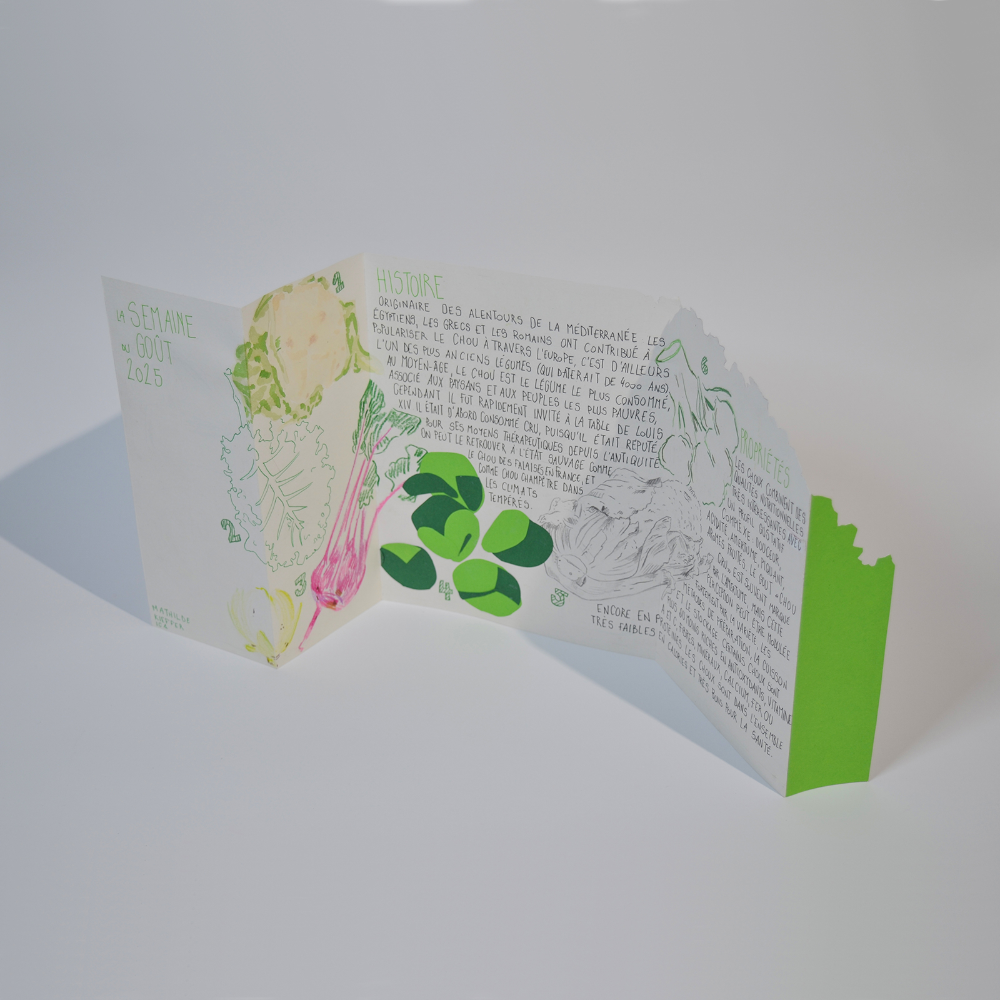

semaine du goût
2025 DépliantRéalisation d'un prospectus dépliant pour la semaine du goût sur le thème des choux.
Ciblant un public juvénile, cette édition se veut colorée et variée en terme de technique d'illustration.
Ce dépliant regroupe l'histoire du chou dans notre alimentation, mais également une recette de choucroute et un petit jeu de reconnaissance des différentes variétés de choux.
